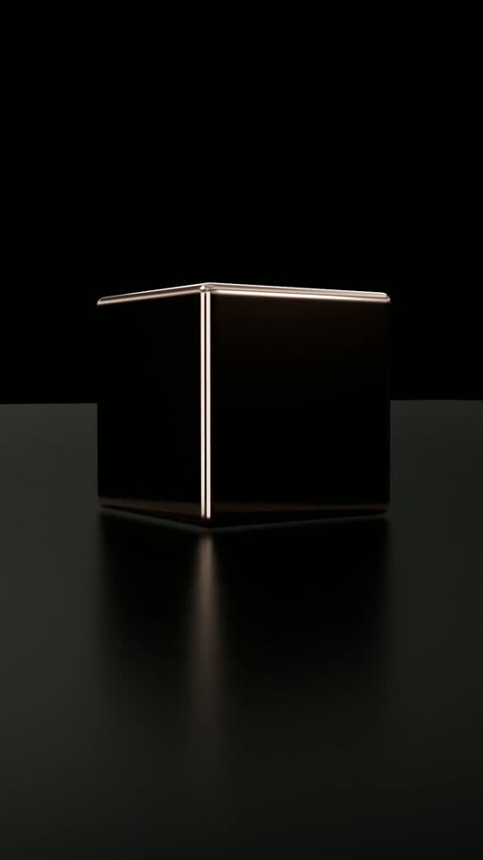
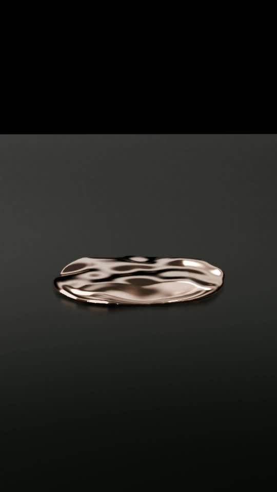
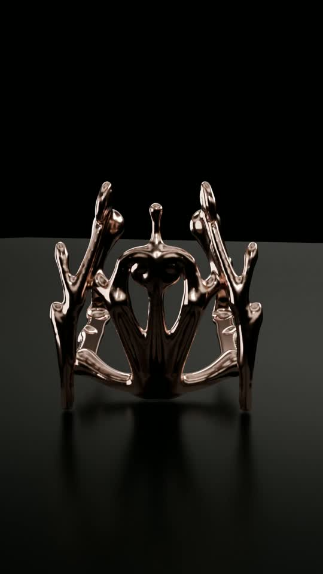

Atelier Bambu Lab transforme Claude en assistant de fabrication : il retrouve et dessine vos modèles, calcule leur solidité, compare les réglages, prépare l'impression et surveille la machine. Vous gardez une seule chose : la décision de lancer.
Un porte-guitare « Liquid Chrome » né d'une conversation : à gauche le calcul de résistance, à droite le rendu chromé.
Concevoir
Plusieurs versions en 3D, retouchées en langage courant.
La pièce qui permet à Claude de passer de la parole aux actes.
Seul, Claude sait parler : expliquer, conseiller, rédiger. Il ne voit pas votre imprimante, ni vos fichiers, ni votre logiciel 3D. Le MCP (Model Context Protocol) est une prise standard qui lui donne des mains : chaque logiciel compatible présente à Claude une liste d'outils qu'il peut utiliser, avec leur mode d'emploi.
Sans MCP
« Pour imprimer ton support, ouvre Bambu Studio, choisis le profil PETG, règle 4 parois… » Vous faites tout, Claude commente.
Avec le MCP de l'atelier
« Imprime-le en PETG, solide. » Claude découpe, vérifie, dépose le fichier, vous montre le plateau. Vous validez.
Comme une prise USB-C pour l'IA
Un même standard, de nombreux appareils. Claude peut brancher plusieurs MCP à la fois et les faire travailler ensemble : Blender pour sculpter une forme, Atelier Bambu Lab pour la fabriquer. C'est exactement ce que montre l'exemple de la partie 2.
Partie 1 · Comprendre
Comment l'atelier se branche
Tout tourne chez vous. Claude n'a jamais d'accès direct à l'imprimante : il passe par le serveur, qui applique les règles.
Chez vous
Fichiers, historique et secrets restent sur votre serveur, sauvegardés chaque nuit.
Partout
Depuis le PC, le téléphone ou le web, via un accès privé et chiffré.
Ouvert
Logiciel libre (AGPL-3.0). Bambu Studio fait la découpe, comme à la main.
Partie 1 · Comprendre
Ce que Claude sait faire avec l'atelier
96 outils, regroupés par métier. Vous n'avez pas à les connaître : vous parlez, Claude choisit.
Bibliothèque
Importer vos dossiers, un lien MakerWorld ou Printables ; chercher, étiqueter, versionner, repérer les doublons, corbeille.
search_modelsimport_from_url
Conception
17 gabarits paramétriques, modifications sur copie (échelle, coupe, pose à plat), réparation de maillage, vues 3D.
create_from_templatemodify_geometry
Calcul
Analyse de fabricabilité (surplombs, parois fines), retrait, jeux d'assemblage, résistance.
analyze_geometryrepair_mesh
Préparation
Objectifs (« solide, propre, rapide »), variantes, découpe Bambu Studio, comparaison, plusieurs pièces par plateau, multicolore AMS.
compare_variantsplan_plate
Impression
Dépôt sans lancement, confirmation humaine, file d'attente, suivi couche par couche, arrêt humain.
request_print_confirmationget_print_status
Caméra et alertes
Photo à la demande, détection d'échec, notifications sur téléphone ou par e-mail.
get_camera_snapshotconfigure_notifications
Coûts et bobines
Coût par pièce et par projet, inventaire des bobines et de l'AMS, alerte de manque, tableau d'usage.
estimate_costlist_spools
Apprentissage
Pièces de calibration, journal des impressions, conseils de post-traitement : les réglages s'affinent.
record_print_resultpost_processing_advice
Partie 1 · Comprendre
Claude prépare, vous décidez
Une IA qui pilote une machine chauffée à 260 °C doit être tenue. L'atelier est conçu pour ça.
1 · Rien ne démarre sans vous. Claude peut préparer et déposer un fichier, jamais le lancer. Le lancement exige votre code personnel à 6 chiffres, que Claude ne connaît pas, ou un clic depuis votre navigateur enregistré.
2 · L'accord vaut pour cette impression-là. Il est lié au fichier exact (son empreinte), au plateau, à l'imprimante et à la matière, et expire au bout de deux minutes. Trois erreurs de code verrouillent tout.
3 · Les réglages dangereux sont filtrés. Seuls les réglages connus peuvent être modifiés ; les températures du fichier final sont relues et comparées aux limites de la machine avant le dépôt.
4 · Les secrets ne passent pas par la conversation. Le code d'accès de l'imprimante, les mots de passe et le code de lancement ne sont jamais montrés à Claude.
5 · Vos originaux sont intouchables. Toute modification crée une copie et une nouvelle version.
6 · Mesuré, calculé ou estimé : c'est dit. Une valeur inconnue est signalée, jamais inventée.
Le reste de ce document suit une vraie fabrication, de l'idée à la pièce sur le plateau. Les images proviennent de Blender, de l'atelier et de la caméra de l'imprimante ; la conversation est résumée.
Partie 2 · Un exemple réel
Étape 1 · L'idée
« Je veux un porte-guitare Liquid Chrome. Je n'ai aucune 3D. »
Claude part d'un modèle ouvert dans Blender, grâce au MCP Blender.
VousTu vois ma pièce « Guitar Stand (200mm) » ouverte dans Blender ? Je veux la rendre Liquid Chrome, mais qu'elle reste un support fonctionnel : je vais l'imprimer, puis la galvaniser.
ClaudeBlender · objets de la scène Oui : un support en arche, deux bras en U pour le dos de la caisse, deux butées basses, une toile centrale ajourée, environ 40 000 faces. Je vois où tu veux en venir : garder la fonction, mais donner l'air d'un métal fondu figé en plein mouvement.
On garde intact
Les butées qui retiennent la caisse, l'angle et la largeur des bras, l'écartement des pattes au sol pour la stabilité.
On liquéfie
Volumes gonflés et tubulaires, jonctions épaisses, toile changée en ponts de matière, pattes qui finissent en gouttes.
ClaudeLa galvanoplastie impose aussi ses règles : pas de creux profonds et étroits (le métal n'y entre pas), des tendons d'au moins 5 à 6 mm, des courbes continues, et de petits logements pour des patins en feutre aux points de contact. Je travaille sur une copie de ton objet.
Étape 2 · Concevoir
Plusieurs versions, puis « celle-ci, mais… »
Les versions sculptées passent dans la bibliothèque de l'atelier, où Claude les compare.
ClaudeBlender · remaillage, déformationimport_model Voici deux directions dans la collection « Porte-guitare Liquid Chrome ». Tu peux les faire tourner dans le viewer 3D.
Version 1 — tribal à volutes. 202 × 214 × 204 mm, crosses très enroulées.Version 2 — tribal adouci. 201 × 215 × 204 mm, formes plus organiques, pointes arrondies.
VousLa première, mais avec des crosses moins enroulées, plus organiques, et des embouts arrondis pour ne pas marquer le vernis.
Claudelink_model_versions C'est la version 2. Volutes adoucies, chaque point de contact arrondi. L'original reste intact, et les deux versions sont liées pour garder l'historique.
Étape 3 · Calculer
« Translucide et rigide » : est-ce que ça tient ?
Avant le chrome, un premier tirage en PETG translucide. Claude vérifie d'abord la résistance.
VousJ'ai du PETG translucide Bambu. Je veux qu'il soit bien translucide, mais rigide : c'est une guitare posée dessus en permanence.
Claudeanalyze_geometrycalcul par éléments finis Le PETG est un bon choix : plus tenace que le PLA et moins sujet au fluage sous charge permanente. J'ai simulé une charge de 100 N sur chaque appui (environ 10 kg, plus de deux fois le poids d'une guitare) :
Calcul de résistance avec 100 N par appui : contraintes en couleur (bleu = faible, jaune = plus forte), à côté du rendu chromé visé. Les contraintes les plus fortes se concentrent à la base des bras.
ClaudeÇa tient, avec de la marge ; les zones les plus sollicitées sont les jonctions basses des bras. Le point faible d'une impression est entre les couches : j'oriente la pièce pour que les bras travaillent dans le sens des filaments. Pour la translucidité, peu de parois et un remplissage soit vide soit plein jouent contre la rigidité. Je te prépare plusieurs profils pour trouver le bon compromis.
Étape 4 · Comparer
Six profils, un tableau, un choix éclairé
Chaque variante est réellement découpée par Bambu Studio : temps et grammes sont mesurés, pas estimés.
Claudeset_manufacturing_goalsexecute_headless_slice ×6compare_variants Voici les six variantes pour la P1S, en PETG Translucent, buse 0,4, plaque Textured PEI :
Coût : filament au prix de la bobine, électricité et usure machine. Variante A : chiffres réels de la découpe imprimée ; autres lignes : valeurs indicatives de l'exemple.
ClaudeJe recommande A. Plein à 100 % en zig-zag, le PETG laisse passer la lumière sans les reflets brouillons d'un remplissage partiel, et c'est la plus rigide. B est magnifique mais ne porterait pas la guitare ; F n'apporte presque rien pour presque deux fois plus de temps.
VousOk, A. On imprime.
Étape 5 · Vérifier
Voir avant d'imprimer
La pièce sur le vrai plateau, une couche du fichier final, et les contrôles de sécurité.
Vue de dessus du plateau 256 × 256 mm, lue dans le fichier découpé : position et orientation réelles.
Couche 300 sur 849 (Z = 72 mm) : les sept sections de la pièce, parois et remplissage.
Contrôles automatiques
✓ Pièce dans le plateau, hauteur 203,7 mm sur 250.
✓ Températures lues dans le G-code : buse 250 → 260 °C, plateau 70 °C, sous les plafonds de la machine.
✓ G-code de démarrage identique au profil officiel Bambu (mise à niveau comprise).
✓ 849 couches, 1,26 million de déplacements, temps et poids cohérents.
⚠ Pièce haute sur trois petits appuis : à surveiller au début.
Étape 6 · Décider
Vous validez, dans Claude
Le fichier est déposé sur l'imprimante sans être lancé. La confirmation s'affiche dans la conversation ; l'impression part dès que vous validez.
Lancer l'impression ?
Fichierporte_guitare_tribal_v2
ImprimanteP1S · plaque Textured PEI
MatièreBambu PETG Translucent (ext.)
Durée · filament24 h 56 · 549,9 g
Températuresbuse 250–260 °C · plateau 70 °C
Votre code de lancement personnel :
•
•
•
•
•
•
Lancer
Pourquoi un code et pas un simple bouton ?
Un bouton dans la conversation pourrait être « cliqué » par l'assistant lui-même. Le code à 6 chiffres, Claude ne le connaît pas : vous le définissez une fois, depuis votre navigateur, et il est stocké chiffré.
valable pour cette impression : fichier, plateau, matière ;
expire au bout de 2 minutes ;
verrouillé après 3 erreurs ;
la page web reste disponible en secours.
L'arrêt d'urgence suit la même règle : c'est un geste humain.
Étape 7 · Suivre
« Ça en est où ? »
Claude lit l'état de l'imprimante et regarde par sa caméra.
VousÇa en est où ?
Claudeget_print_status L'imprimante finit sa préparation : plateau 69,5 °C sur 70, buse 248,7 °C sur 250. La buse est redescendue à 230 °C pendant le palpage, c'est normal : le démarrage Bambu évite ainsi qu'elle bave. La première couche commence dans une ou deux minutes.
VousEt là ? Regarde la caméra.
Claudeget_camera_snapshot Couche 5 sur 849, aucune erreur, fin prévue demain vers 21 h. On voit les appuis translucides bien à plat, sans fil parasite ni coin qui se soulève. Garde le capot fermé : il ne fait que 5 °C dans la machine, et c'est au début qu'un décollement est le plus probable.
Photo prise par Claude avec la caméra de la P1S : les premiers appuis en PETG translucide sur la plaque texturée.
L'atelier peut aussi vous prévenir sur votre téléphone à la fin, en cas d'erreur, ou si la caméra repère un défaut. L'arrêt reste votre décision.
Bonus · Raconter
Et pour le montrer : une vidéo, dans la foulée
Toujours dans la même conversation, Claude anime la pièce dans Blender pour les réseaux sociaux.
VousFais-moi un reel vertical : un cube de cuivre qui fond, et le porte-guitare qui sort de la flaque.
ClaudeBlender · animation, rendu C'est prêt : 9 secondes en 1080 × 1920, 30 images par seconde. Place tes coupes musicales à 3 s et à 5,7 s. La fin tourne en continu, de trois quarts : enchaîne sur ton plan de la vraie pièce cuivrée, sous le même angle.

0 s · le cube de cuivre poli

0,7 – 3 s · il fond en flaque3 – 5,7 s · la pièce remonte du métal

5,7 – 9 s · tour complet final
Deux MCP, une seule conversation : Blender pour la forme et l'image, Atelier Bambu Lab pour la fabrication. Claude passe de l'un à l'autre sans que vous ayez à ouvrir un seul logiciel.
Et tout le reste
Le porte-guitare n'est qu'un exemple. L'atelier couvre toute la vie d'une pièce.
Import de vos dossiers, de MakerWorld ou de Printables. Versions, doublons, corbeille, aperçus 3D.
Plusieurs pièces
Répartition automatique sur un ou plusieurs plateaux, réglages par objet.
Multicolore AMS
Une couleur par zone, coût de la purge chiffré avant d'imprimer.
Bobines et coûts
Inventaire, alerte de manque, coût par pièce et par projet, tableau d'usage de la machine.
Calibration
Pièces de test générées, mesures réinjectées : les profils s'affinent avec votre machine.
Journal
Photo, réglages réels et note de chaque impression, pour améliorer les suivantes.
Post-traitement
Conseils selon la matière : ponçage, recuit, collage, finition.
Ce qu'il faut
Une imprimante Bambu Lab (P1S, P1P, X1, A1, H2D…) en mode réseau local, un petit PC Linux allumé en permanence (ou Docker), et Claude sur ordinateur, web ou mobile. Vos fichiers et votre historique restent chez vous, sauvegardés chaque nuit.
Atelier Bambu Lab est un logiciel libre (AGPL-3.0), indépendant de Bambu Lab. Bambu Studio, utilisé pour la découpe, reste distribué par Bambu Lab sous sa propre licence.
github.com/ArseneGA/BAMBULAB-MCP · Les images de ce document proviennent de l'atelier et de la caméra de la P1S ; la conversation est résumée ; les variantes B à F du tableau sont indicatives.